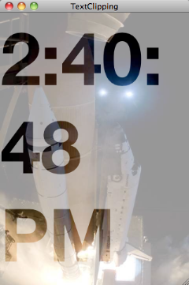

Please note: this article is part of the older "Objective-C era" on Cocoa with Love. I don't keep these articles up-to-date; please be wary of broken code or potentially out-of-date information. Read "A new era for Cocoa with Love" for more.
Creating alpha masks from text on the iPhone and Mac
Alpha masks are a powerful way to create graphical effects in your program. In this post, I'll show you how to create an alpha mask from a text string and use that mask to create text-based effects with an image. I'll also show you how to do this on the iPhone and the Mac, so you can see the differences between these platforms in this area.
Introduction
In this post I will present the following sample application:
The program shows the current time, updating every second, on the Mac or iPhone. Within the bounds of the text, the image of the space shuttle is displayed at 100% opacity. Everywhere else, it displays at 30% opacity.
This is done by drawing the image of the shuttle over a white background using an alpha mask — where the mask is white (100% opaque) for the text and dark gray (30% opaque) for the background.
Download the TextMasking-iPhone.zip (37kB) and the TextMasking-Mac.zip (42kB) projects.
Clipping regions in Core Graphics
Clipping and masking are the two key ways of limiting the effect that drawing has in CoreGraphics.
With a clipping region, we create a hard boundary. When a clipping region is used, every pixel drawn inside the region is fully shown (completely opaque), and no pixels outside the region are affected (completely transparent). For example, the following code:
CGContextBeginPath(context);
CGContextAddRect(context, CGRectMake(10, 10, 80, 80));
CGContextAddRect(context, CGRectMake(20, 20, 40, 40));
CGContextEOClip(context);will ensure that subsequent drawing only has an effect if it is inside the rectangle (x=10, y=10, width=80, height=80) but outside the rectangle (x=20, y=20, width=10, height=10).
The "EO" inCGContextEOClipstands for "Even-Odd". When you use this function instead ofCGContextClip, subsequent nested regions (an even or an odd number of nestings) continue to toggle clipping on and off. That is why the secondCGContextAddRectis excluded from the clipping region. If I had usedCGContextClip, the nested rectangle would have no effect (it is already inside the clipping region).
Clipping with image masks in Core Graphics
A mask affects the opacity/transparency of drawn pixels like a clipping region but the affected areas are specified by the color values in an image, not from a region. This is the approach used in the sample applications. A mask is used instead of a clipping region for two reasons:
- A mask allows varying levels of transparency, not just on or off (for the partially transparent regions in the image).
- On the iPhone, it's very difficult to get the region outline of text characters (on the Mac you can use
appendBezierPathWithGlyph:inFont:), making a clipping region from a text boundary impractical.
Creating a mask
The Mac and the iPhone differ significantly on how the mask image must be created.
On the iPhone, it is possible to copy the current graphics context to an image before it is drawn to screen and use that as the mask.
On the Mac this doesn't work. The Mac requires that masking images be grayscale without an alpha channel — you could copy the current graphics context in the same way but it can't be used as a mask image. We'll need to create a context that meets these specific requirements.
On the iPhone:
Drawing the text to the current graphics context and copying that to an image on the iPhone:
CGContextRef context = UIGraphicsGetCurrentContext();
// Draw a dark gray background
[[UIColor darkGrayColor] setFill];
CGContextFillRect(context, rect);
// Draw the text upside-down
CGContextSaveGState(context);
CGContextTranslateCTM(context, 0, rect.size.height);
CGContextScaleCTM(context, 1.0, -1.0);
[[UIColor whiteColor] setFill];
[text drawInRect:rect withFont:[UIFont fontWithName:@"HelveticaNeue-Bold" size:124]];
CGContextRestoreGState(context);
// Create an image mask from what we've drawn so far
CGImageRef alphaMask = CGBitmapContextCreateImage(context);The only tricky part here is that the image will be flipped when we draw it back again, so we need to draw the text upside-down — other than that, the iPhone has it easy here.
On the Mac
Since the Mac must have the bitmap image as a CGColorSpaceCreateDeviceGray(); image without an alpha channel, we can't just copy a screen context to use as our mask. Instead, we need to create a new context with the settings we require and perform all drawing there.
This has one advantage: we can set the context to flipped:NO so that we don't need to draw upside-down to have it render correctly.
// Create a grayscale context for the mask
CGColorSpaceRef colorspace = CGColorSpaceCreateDeviceGray();
CGContextRef maskContext =
CGBitmapContextCreate(
NULL,
self.bounds.size.width,
self.bounds.size.height,
8,
self.bounds.size.width,
colorspace,
0);
CGColorSpaceRelease(colorspace);
// Switch to the context for drawing
NSGraphicsContext *maskGraphicsContext =
[NSGraphicsContext
graphicsContextWithGraphicsPort:maskContext
flipped:NO];
[NSGraphicsContext saveGraphicsState];
[NSGraphicsContext setCurrentContext:maskGraphicsContext];
// Draw a black background
[[NSColor darkGrayColor] setFill];
CGContextFillRect(maskContext, rect);
// Draw the text right-way-up (non-flipped context)
[text
drawInRect:rect
withAttributes:
[NSDictionary dictionaryWithObjectsAndKeys:
[NSFont fontWithName:@"HelveticaNeue-Bold" size:124], NSFontAttributeName,
[NSColor whiteColor], NSForegroundColorAttributeName,
nil]];
// Switch back to the window's context
[NSGraphicsContext restoreGraphicsState];
// Create an image mask from what we've drawn so far
CGImageRef alphaMask = CGBitmapContextCreateImage(maskContext);Using the mask
Using the mask is much easier than creating it:
- Save the state of the current context (so that we can go back to a non-masked state when we're done).
- Apply the mask using
CGContextClipToMask. - Perform whatever drawing we want masked.
- Restore the saved context state to remove the mask again.
The iPhone version is:
// Draw a white background (clear the window)
[[UIColor whiteColor] setFill];
CGContextFillRect(context, rect);
// Draw the image, clipped by the mask
CGContextSaveGState(context);
CGContextClipToMask(context, rect, alphaMask);
[[UIImage imageNamed:@"shuttle.jpg"] drawInRect:rect];
CGContextRestoreGState(context);
CGImageRelease(alphaMask);The Mac version substitutes NSColor and NSImage for UIColor and UIImage but is otherwise the same.
Conclusion
Download the TextMasking-iPhone.zip (37kB) and the TextMasking-Mac.zip (42kB) projects.
Clipping and masking are two of the most powerful operations available when drawing in code but as highly abstract concepts they can be difficult to use for the first time since a mistake normally results in nothing happening (a difficult scenario from which to learn).
I have only briefly shown region-based clipping. If you don't need the partial transparency offered by masks and can draw your shapes as a region then it is faster than a mask (since it doesn't need to allocate or load the mask image). Obviously, the option you choose should be based on the output you require.
The examples shown here don't cache anything — they allocate and dispose of all data structures every time the drawRect: method is called. In a proper program, you should not allocate the mask image every time you draw. You can allocate the mask once and simply set the context back to it to update it.
An NSSplitView delegate for priority based resizing
Building for earlier OS versions from Snow Leopard